РаботаЕсли сила перемещает тело на некоторое расстояние, то она совершает над телом работу. Работа А есть произведение силы F на перемещение s. 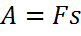 Работа — величина скалярная. Единица СИ работы
Работа постоянной силыЕсли сила F постоянна во времени и ее направление совпадает с направлением перемещения тела, то работа Wнаходится по формуле: 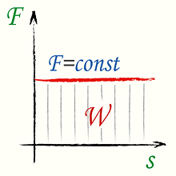 Здесь:W(Е) — совершенная работа (Джоуль) F — постоянная сила, совпадающая по направлению с перемещенем (Ньютон) s — перемещение тела (метр) Работа постоянной силы, направленной под углом к перемещениюЕсли сила и перемещение составляют между собой угол α < 90º, то перемещение следует умножать на составляющую силы в направлении перемещения (или силу умножать на составляющую перемещения в направлении действия силы). 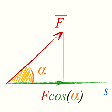 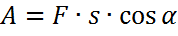 Здесь: Работа переменной силы, направленной под углом к перемещению, формулаЕсли сила не постоянна по величине и является функцией перемещения F =F(s), и направлена под углом α к перемещению, то работа есть интеграл от силы по перемещению. 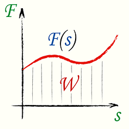 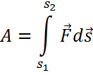 Площадь под кривой на графике зависимости F от s равна работе, произведенной данной силой Работа против сил тренияЕсли тело движется с постоянной скоростью (равномерно) против сил трения, то над ним совершается работа 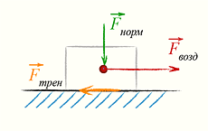 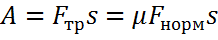 Здесь: Работа силы трения на наклонной плоскости, формулаПри движении тела вверх по наклонной плоскости совершается работа против силы тяжести и силы трения. В этом случае сила, действующая в направлении перемещения, складывается из скатывающей силы Fск и силы трения Fтр. В соответствии с формулой (1) 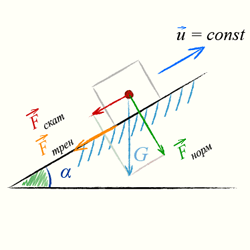 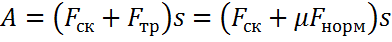 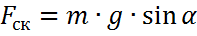 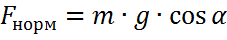 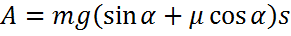 Работа в гравитационном полеЕсли тело перемещается в гравитационном поле на значительное расстояние, то совершаемую против сил гравитационного притяжения работу (например, работу для вывода ракеты в космос) нельзя вычислить по формуле A=mg·h, потому, что сила тяжести Gобратно пропорциональна расстоянию между центрами масс. 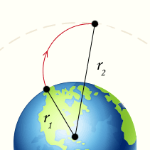 Работа, совершаемая при перемещении тела вдоль радиуса в гравитационном поле, определяется как интеграл 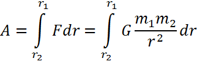 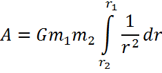 См. Таблицу интегралов 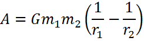 Здесь: Величина работы A не зависит от формы пути от точки r1 к r2, так как в формулу входят только радиальные составляющие dr перемещения, совпадающие с направлением силы притяжения. формула (3) справедлива в случае любых небесных тел. Работа затрачиваемая на деформациюОпределение:Работа, затрачиваемая на деформацию упругих тел, также накапливается в этих телах в виде потенциальной энергии.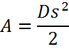
МощностьМощностью P называется отношение произвольной работы А к времени t, в течение которого совершается работа. Единица СИ мощности: 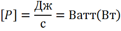 Средняя мощностьЕсли: 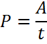 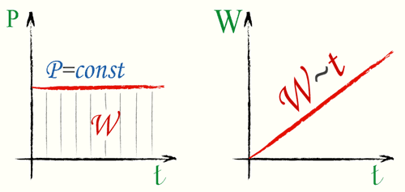 Примечание: Если работа пропорциональна времени, W~t, то мощность постоянна. Коэффициент полезного действия, КПДКаждая машина потребляет большую мощность, чем отдает, поскольку в ней происходят потери мощности (за счет трения, сопротивления воздуха, нагревания и т.д.)Коэффициент полезного действия представляет собой отношение полезной работы к ззатраченой работе.Если: 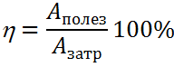 Общий коэффициент полезного действияПри многократном превращении или передаче энергии общий коэффициент полезного действия равен произведению КПД на всех ступенях преобразования энергии: 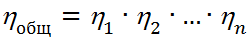 |